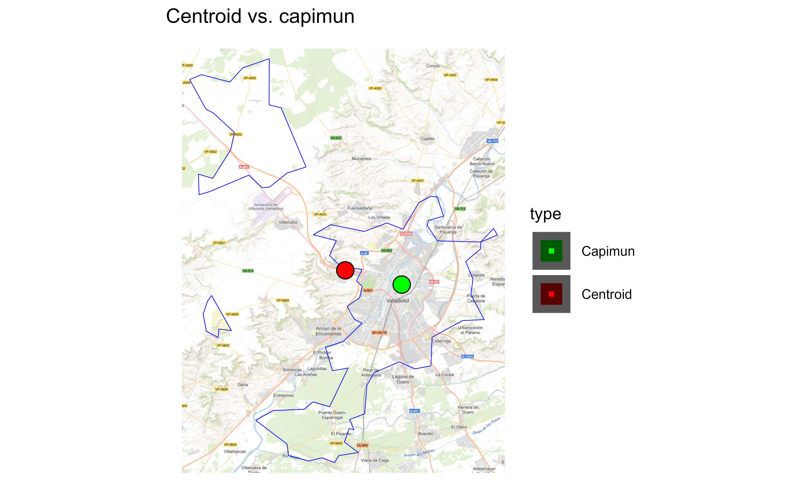

Get a sf POINT with the location of the political powers for
each municipality (possibly the center of the municipality).
Note that this differs of the centroid of the boundaries of the
municipality, returned by esp_get_munic().
Usage
esp_get_capimun(
year = Sys.Date(),
epsg = "4258",
cache = TRUE,
update_cache = FALSE,
cache_dir = NULL,
verbose = FALSE,
region = NULL,
munic = NULL,
moveCAN = TRUE,
rawcols = FALSE
)Source
IGN data via a custom CDN (see https://github.com/rOpenSpain/mapSpain/tree/sianedata).
Arguments
- year
Release year. See Details for years available.
- epsg
projection of the map: 4-digit EPSG code. One of:
"4258": ETRS89."4326": WGS84."3035": ETRS89 / ETRS-LAEA."3857": Pseudo-Mercator.
- cache
A logical whether to do caching. Default is
TRUE. See About caching.- update_cache
A logical whether to update cache. Default is
FALSE. When set toTRUEit would force a fresh download of the source file.- cache_dir
A path to a cache directory. See About caching.
- verbose
Logical, displays information. Useful for debugging, default is
FALSE.- region
A vector of names and/or codes for provinces or
NULLto get all the municipalities. See Details.- munic
A name or
regexexpression with the names of the required municipalities.NULLwould return all municipalities.- moveCAN
A logical
TRUE/FALSEor a vector of coordinatesc(lat, lon). It places the Canary Islands close to Spain's mainland. Initial position can be adjusted using the vector of coordinates. See Displacing the Canary Islands.- rawcols
Logical. Setting this to
TRUEwould add the raw columns of the resulting object as provided by IGN.
Value
A sf POINT object.
Details
year could be passed as a single year (YYYY format, as end of year) or
as a specific date (YYYY-MM-DD format). Historical information starts as
of 2005.
When using region you can use and mix names and NUTS codes (levels 1,
2 or 3), ISO codes (corresponding to level 2 or 3) or cpro. See
esp_codelist
When calling a higher level (province, CCAA or NUTS1), all the municipalities of that level would be added.
About caching
You can set your cache_dir with esp_set_cache_dir().
Sometimes cached files may be corrupt. On that case, try re-downloading
the data setting update_cache = TRUE.
If you experience any problem on download, try to download the
corresponding .geojson file by any other method and save it on your
cache_dir. Use the option verbose = TRUE for debugging the API query.
Displacing the Canary Islands
While moveCAN is useful for visualization, it would alter the actual
geographic position of the Canary Islands. When using the output for
spatial analysis or using tiles (e.g. with esp_getTiles() or
addProviderEspTiles()) this option should be set to FALSE in order to
get the actual coordinates, instead of the modified ones. See also
esp_move_can() for displacing stand-alone sf objects.
See also
Other political:
esp_codelist,
esp_get_can_box(),
esp_get_ccaa(),
esp_get_comarca(),
esp_get_country(),
esp_get_gridmap,
esp_get_munic(),
esp_get_nuts(),
esp_get_prov(),
esp_get_simpl_prov()
Other municipalities:
esp_get_munic(),
esp_munic.sf
Examples
# \dontrun{
# This code compares centroids of municipalities against esp_get_capimun
# It also download tiles, make sure you are online
library(sf)
#> Linking to GEOS 3.13.1, GDAL 3.11.0, PROJ 9.6.0; sf_use_s2() is TRUE
# Get shape
area <- esp_get_munic_siane(munic = "Valladolid", epsg = 3857)
# Area in km2
print(paste0(round(as.double(sf::st_area(area)) / 1000000, 2), " km2"))
#> [1] "353.42 km2"
# Extract centroid
centroid <- sf::st_centroid(area)
#> Warning: st_centroid assumes attributes are constant over geometries
centroid$type <- "Centroid"
# Compare with capimun
capimun <- esp_get_capimun(munic = "Valladolid", epsg = 3857)
capimun$type <- "Capimun"
# Get a tile to check
tile <- esp_getTiles(area, "IGNBase.Todo", zoommin = 2)
# Join both point geometries
points <- rbind(
centroid[, "type"],
capimun[, "type"]
)
# Check on plot
library(ggplot2)
library(tidyterra)
ggplot(points) +
geom_spatraster_rgb(data = tile, maxcell = Inf) +
geom_sf(data = area, fill = NA, color = "blue") +
geom_sf(data = points, aes(fill = type), size = 5, shape = 21) +
scale_fill_manual(values = c("green", "red")) +
theme_void() +
labs(title = "Centroid vs. capimun")

# }